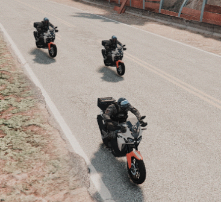
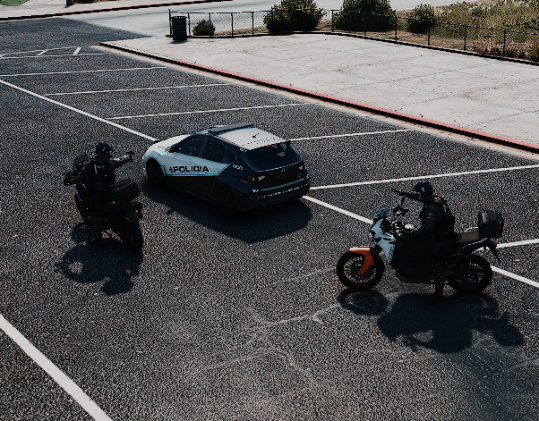
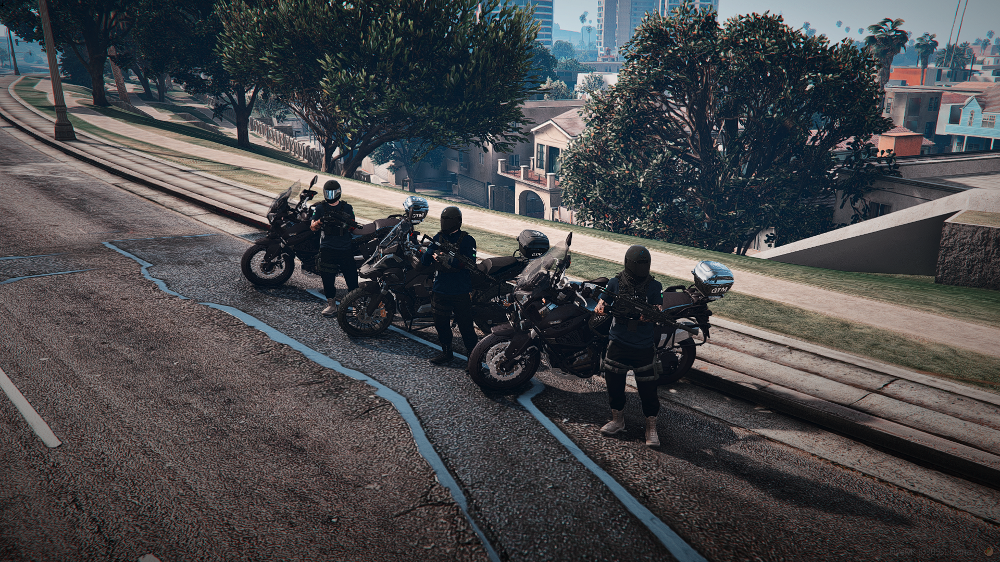
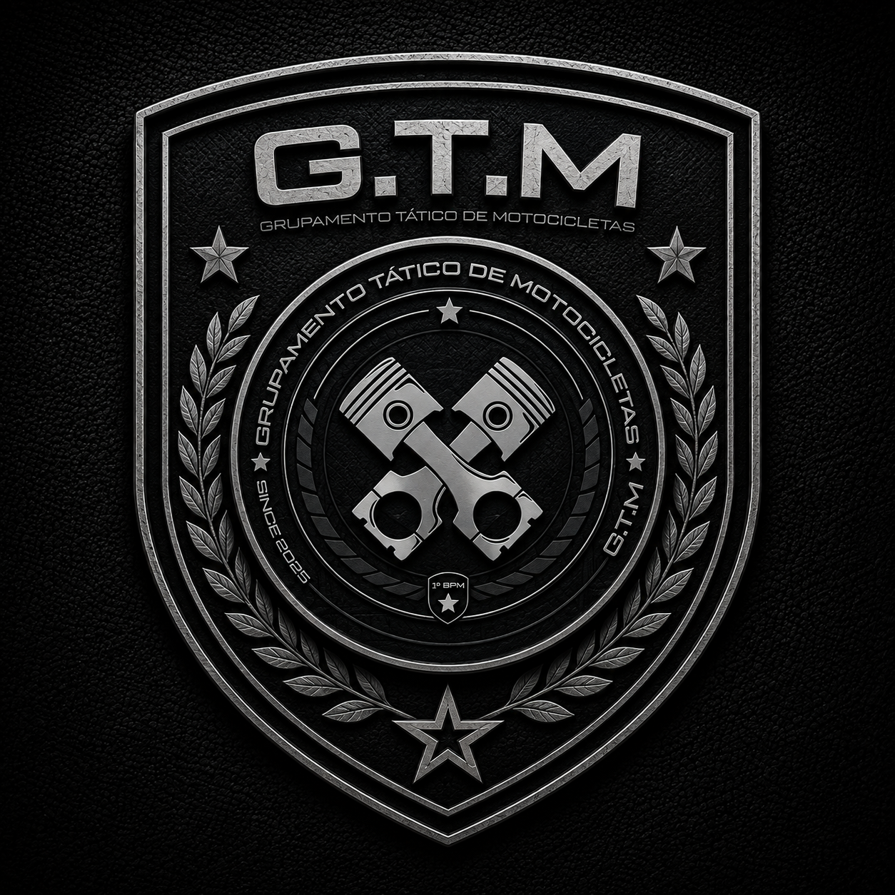

APRESENTAÇÃO
1. Introdução
O manual de conduta do 2ºESQ/GTM tem como objetivo centralizar toda informação necessária para conscritos, estagiários e pilotos oficiais da G.T.M., para a melhor absorção de conhecimento dos procedimentos e regras do grupamento.
O 2ºESQ/GTM tem prioridade em acompanhamentos à motocicletas. Caso o acompanhamento seja contra um veículo quatro rodas a prioridade é da G.R.R., salvo exceções de veículos de pequeno porte, ou caso a primária peça para a unidade G.T.M. manter a primária do acompanhamento;
NORMAS DA UNIDADE
2.Regras
- Toda e qualquer queda, o oficial do grupamento deverá dar QTA, caso volte a QRU poderá ser retirado de suas funções como oficial da G.T.M.;
- A utilização das motos Africa Twin e MT-07 é exclusivamente proibida para as demais unidades e membros não pertencentes à unidade G.T.M.;
- É totalmente proibido a utilização da manobra Roadblock(utilização da moto como barreira para dificultar a passagem);
- É proibido empinar a motocicleta;
- Fica proibido o patrulhamento diário com garupa, cada membro da unidade deve utilizar a sua motocicleta. Salvo em algumas situações(Ex.: Cidade em Cód. Vermelho) e com autorização prévia do COMANDO da unidade;
- Estagiários somente poderão patrulhar na presença de algum Piloto Oficial. Sendo assim, fica estritamente proibida a patrulha de 2 estagiários;
- Em acompanhamento a veículo quatro rodas, a unidade G.T.M. deve se manter na função de unidade secundária da QRU;
- Caso vá prestar concurso/formulário de outro Grupamento operacional, como COE, GRR ou GRA, deverá pedir baixa do G.T.M.;
COMPOSIÇÃO DA UNIDADE
3.Funções
Uma unidade G.T.M. pode ser composta por até três motocicletas, onde cada uma tem sua função:
1 - Moto Primária(P1):
Tem como principal função a coordenação da Unidade em que está, é quem decide o destino da unidade, a quem abordar e quais ocorrências assumir. A moto primária é sempre composta pelo Piloto mais experiente da unidade.
Nos acompanhamentos, tem como função manter sempre o visual do veículo em que está acompanhando e, caso esteja sozinho, também exerce a função de modular a QRU.
2 - Moto Secundária(P2):
Tem como principal função o auxílio ao coordenador, ou seja, irá assumir toda e qualquer responsabilidade atribuída ao mesmo, seja abordagem, modulação ou qualquer outra ordem, também é responsável pelo cuidado do perímetro durante determinadas ocasiões.
Nos acompanhamentos, tem como principal função a modulação. Também é responsável pelo adiantamento nos becos e sempre deve estar em alerta para assumir caso aconteça algo com o P1.
3 - Moto Terciária(P3):
Tem como principal função cuidar da retaguarda da unidade durante o patrulhamento. Geralmente composta pelo Piloto mais inexperiente ou estagiário, tem obrigação de acatar toda e qualquer ordem dada pelo coordenador da unidade.
Nos acompanhamentos, sua principal função é o adiantamento de becos. Sempre atento e auxiliando o P1 e P2.
COMUNICAÇÃO OPERACIONAL
4. Modulação
Parte vital do trabalho militar dentro do DPJ, a modulação é algo muito prezado dentro do 2ºESQ/GTM, por isso alguns padrões são criados para que a qualidade da mesma seja mantida dentro do grupamento.
4.1 - Comunicação no /pr
O chat da polícia é utilizado para passarmos informações que não são necessárias serem passadas na rádio, segue alguns exemplos da utilização do /pr pela GTM.
QAP Central, 3° Sargento Neto (Comando 2°ESQ/GTM-DPJ) iniciando serviço!
QAP Central, 3° Sargento Neto (Comando 2°ESQ/GTM-DPJ) indo de QTX!
4.2 - Comunicação na Central
A modulação deverá ser curta e breve na central, para que os GTMs tenham foco no acompanhamento, modulando apenas o necessário, é papel do piloto julgar quando é necessário a modulação durante o acompanhamento.
QAP Central, Unidade GTM, QTI do Caixa Eletrônico, (X) metros/km.
Estabelecer a comunicação na central, informar a unidade que está a caminho (2 motos = Equipe e 3 motos = 1 Unidade), caso esteja sozinho informe que uma GTM está QTI.
QAP Central, Akuma na praça, sentido Sport Race;
Estabeleça o contato com a central, informe QTH atual, informe QTH futuro, caso mude o rumo corrija a informação.
PADRÕES OPERACIONAIS
5. Posicionamento
5.1 - Durante patrulhamento
A formação de uma unidade do Grupamento Tático de Motocicletas consiste em até 3 motos. Independente se duas ou três, todas devem manter o formato “serrote” onde a primeira moto fica sempre à direita da via, a segunda deve manter um pouco atrás e para a esquerda, e caso tenha a terceira, ela se mantém atrás da segunda moto, alinhada com a primeira moto.

Este padrão deve sempre ser mantido, visando a segurança de todas as motos em qualquer tipo de situação. Nesta formação, é possível realizar qualquer tipo de manobra sem que a outra corra risco.
5.2 - Durante abordagem
Antes de qualquer abordagem, o P1 irá decidir a quem abordar e o P2 irá modular enquanto o P1 dá a voz e realiza os primeiros procedimentos, e o P3 fará o perímetro.
Durante a abordagem, as motos realizarão uma formação em “L”, onde a primeira moto posicionará na lateral do veículo, a segunda na diagonal e a terceira logo atrás do veículo, sempre de olho na retaguarda. Segue o exemplo na imagem abaixo:

Vale ressaltar que esta formação deve ser seguida à risca, pois garantirá a segurança de todos os membros da unidade e dará liberdade para efetuar qualquer disparo se necessário, evitando qualquer fogo amigo. No caso de fuga da abordagem, todas as motos estão bem posicionadas evitando qualquer tipo de atraso no seu embarque.
5.2.1 - Durante abordagem de alto risco
O posicionamento será no mesmo padrão em “L” (citado acima), porém as motos irão ficar rotacionando no próprio eixo e apontando arma. Sempre em movimento, nunca parado.
5.3 - Estacionamento
Ao efetuar o estacionamento das motocicletas, todas deverão manter com as duas rodas no mesmo lugar (Ex.: Roda dianteira na rua, roda traseira também. Roda dianteira na calçada, roda traseira também) e não com uma roda na rua e a outra na calçada. Assim como mostra a imagem abaixo:

Esse padrão deve ser sempre seguido.

“Se você fugir, eu corro atrás. Se você me enfrentar, eu luto com você. Se atirar em mim, eu atiro de volta.’’
Manual de Conduta do Grupamento Tático de Motocicletas
criado por Brito
desenvolvido para a Cidade Villa